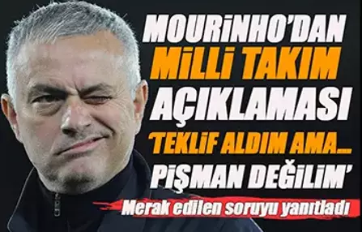
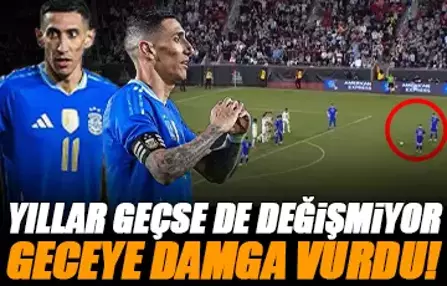

|  | Jose Mourinho'dan Portekiz Milli Takımı açıklaması! |
| Bir dönemin efsane teknik adamlarından biri olan Mourinho büyük başarılarına rağmen hiç ülkesinin milli takımını çalıştırmamıştı. Deneyimli hoca, Portekiz Milli Takımı'ndan teklif aldığını açıkladı. |
|
 |
Edin Dzeko için baş döndüren teklif! |
| Fenerbahçe'nin, Boşnak santrforu Edin Dzeko için astronomik bir teklif aldığı iddia edildi. Bu sezon 22 gol atıp 9 asist yapan 38 yaşındaki futbolcunun da bu teklife sıcak baktığı kaydedildi. İşte detaylar... |
|
|  | Di Maria yıllara meydan okuyor! Serbest vuruştan nefis gol... |
| Kariyerini Portekiz devi Benfica'da sürdüren 36 yaşındaki yıldız Angel Di Maria, Arjantin-Kosta Rika maçına attığı enfes frikik golüyle damga vurdu. |